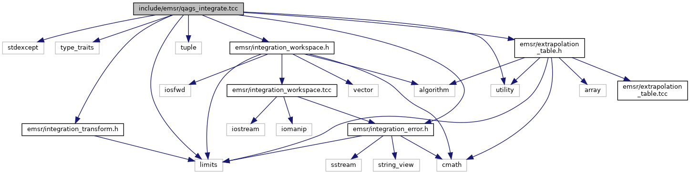

qags_integrate.tcc File Reference
#include <utility>#include <limits>#include <tuple>#include <stdexcept>#include <ext/integration_error.h>#include <ext/integration_transform.h>#include <ext/integration_workspace.h>#include <ext/extrapolation_table.h>
Include dependency graph for qags_integrate.tcc:

This graph shows which files directly or indirectly include this file:

Go to the source code of this file.
Namespaces | |
| __gnu_cxx | |
Macros | |
| #define | QAGS_INTEGRATE_TCC 1 |
Functions | |
| template<typename _Tp , typename _FuncTp > | |
| auto | __gnu_cxx::qagi_integrate (integration_workspace< _Tp, std::invoke_result_t< _FuncTp, _Tp >> &__workspace, _FuncTp __func, _Tp __max_abs_err, _Tp __max_rel_err) -> adaptive_integral_t< _Tp, decltype(map_minf_pinf< _Tp, _FuncTp >(__func)(_Tp |
| template<typename _Tp , typename _FuncTp > | |
| auto | __gnu_cxx::qagil_integrate (integration_workspace< _Tp, std::invoke_result_t< _FuncTp, _Tp >> &__workspace, _FuncTp __func, _Tp __upper, _Tp __max_abs_err, _Tp __max_rel_err) -> adaptive_integral_t< _Tp, decltype(map_minf_b< _Tp, _FuncTp >(__func, __upper)(_Tp |
| template<typename _Tp , typename _FuncTp > | |
| auto | __gnu_cxx::qagis_integrate (integration_workspace< _Tp, std::invoke_result_t< _FuncTp, _Tp >> &__workspace, _FuncTp __func, _Tp __max_abs_err, _Tp __max_rel_err) -> adaptive_integral_t< _Tp, decltype(map_minf_pinf_symm< _Tp, _FuncTp >(__func)(_Tp |
| template<typename _Tp , typename _FuncTp > | |
| auto | __gnu_cxx::qagiu_integrate (integration_workspace< _Tp, std::invoke_result_t< _FuncTp, _Tp >> &__workspace, _FuncTp __func, _Tp __lower, _Tp __max_abs_err, _Tp __max_rel_err) -> adaptive_integral_t< _Tp, decltype(map_a_pinf< _Tp, _FuncTp >(__func, __lower)(_Tp |
| template<typename _Tp , typename _FuncTp , typename _Integrator = gauss_kronrod_integral<_Tp>> | |
| auto | __gnu_cxx::qags_integrate (integration_workspace< _Tp, std::invoke_result_t< _FuncTp, _Tp >> &__workspace, _FuncTp __func, _Tp __lower, _Tp __upper, _Tp __max_abs_err, _Tp __max_rel_err, _Integrator __quad=gauss_kronrod_integral< _Tp >(Kronrod_15)) -> adaptive_integral_t< _Tp, std::invoke_result_t< _FuncTp, _Tp >> |
| return | __gnu_cxx::qags_integrate< _Tp, _FuncTp2 > (__workspace, map_minf_pinf< _Tp, _FuncTp >(__func), _Tp{0}, _Tp{1}, __max_abs_err, __max_rel_err) |
| return | __gnu_cxx::qags_integrate< _Tp, _FuncTp2 > (__workspace, map_minf_pinf_symm< _Tp, _FuncTp >(__func), _Tp{0}, _Tp{1}, __max_abs_err, __max_rel_err) |
| return | __gnu_cxx::qags_integrate< _Tp, _FuncTp2 > (__workspace, map_minf_b< _Tp, _FuncTp >(__func, __upper), _Tp{0}, _Tp{1}, __max_abs_err, __max_rel_err) |
| return | __gnu_cxx::qags_integrate< _Tp, _FuncTp2 > (__workspace, map_a_pinf< _Tp, _FuncTp >(__func, __lower), _Tp{0}, _Tp{1}, __max_abs_err, __max_rel_err) |
Macro Definition Documentation
◆ QAGS_INTEGRATE_TCC
| #define QAGS_INTEGRATE_TCC 1 |
Definition at line 29 of file qags_integrate.tcc.